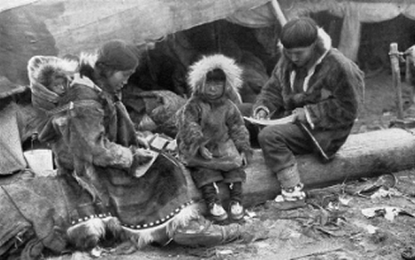

Conhecendo o Canadá em detalhes

História
- Povos originários: as Primeiras Nações, os Inuit e os Métis já viviam no território havia milhares de anos. Chegada dos europeus: Jacques Cartier reivindica a região para a França em 1534, e Samuel de Champlain funda a cidade de Quebec em 1608.
- Domínio britânico: em 1759, a Batalha das Planícies de Abraão leva ao controle britânico da região.
- Confederação: em 1867, nasce o Canadá moderno, com poucas províncias, e o país cresce depois.
- Marcos recentes: bandeira da folha de bordo (1965) e criação de Nunavut (1999).
